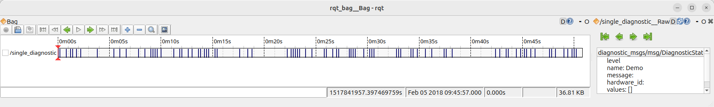
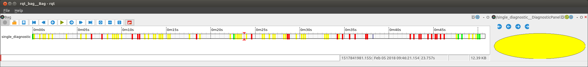
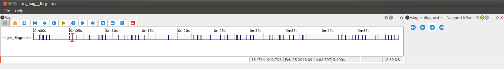
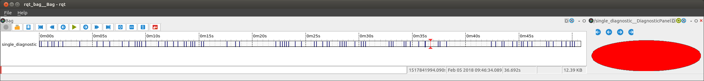
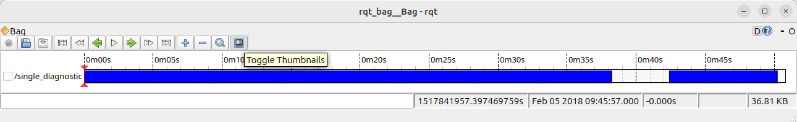
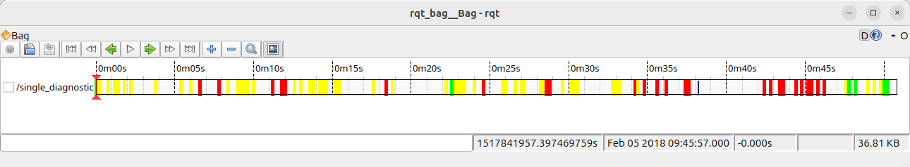

备注
You're reading the documentation for an older, but still supported, version of ROS 2. For information on the latest version, please have a look at Kilted.
Create an rqt_bag Plugin
Let's say you have bag files and you want to be able to create a custom visualization of some data.
rqt_bag gives you the ability to scroll through the recorded messages and visualize the raw message values.
$ ros2 run rqt_bag rqt_bag ~/path/to/BagFile
$ rqt_bag ~/path/to/BagFile # alternative
This provides a standard uniform visualization:

However, you may sometimes want a more visual presentation, or you need to do some post-processing on the raw messages.
For that, you can write an rqt_bag plugin, using the Python plugin system.
This gives you the ability to get a customized visualization of the messages like this:

Some Test Data
In this tutorial, we will be using the level field of the diagnostic_msgs/msg/DiagnosticStatus message.
Below is a simple script for generating diagnostic statuses with random levels.
You can record your own bag from this script, or use this sample data once you unzip it.
from diagnostic_msgs.msg import DiagnosticStatus
import random
import rclpy
from rclpy.node import Node
MODES = ['OK', 'WARN', 'ERROR']
class DiagnosticPub(Node):
def __init__(self):
super().__init__('diagnostic_pub')
self.last_status = None
self.publisher = self.create_publisher(DiagnosticStatus, '/diagnostics', 10)
self.timer = self.create_timer(1, self.callback)
def callback(self):
if self.last_status is None:
# Random initial status
status = random.randint(0, len(MODES))
elif random.randint(0, 5) != 0:
# Do not publish a msg every cycle
return
else:
# Random new (different) status
delta = random.randint(1, 2)
status = (self.last_status + delta) % len(MODES)
self.get_logger().info(f'Publishing {MODES[status]} status')
self.publisher.publish(DiagnosticStatus(level=bytes(status)))
self.last_status = status
def main(args=None):
rclpy.init(args=args)
node = DiagnosticPub()
rclpy.spin(node)
if __name__ == '__main__':
main()
Package Setup
We're going to create a package called rqt_bag_diagnostics_demo.
Start by creating a basic ament_python package, e.g. by calling:
$ ros2 pkg create --build-type ament_python --dependencies diagnostic_msgs python_qt_binding rqt_bag \
--description "rqt_bag plugin for diagnostics_msgs" --license Apache-2.0 \
--maintainer-name "My Name" --maintainer-email "my@name.robots" \
rqt_bag_diagnostics_demo
Edit the relevant parts of the generated package.xml to look like this:
<exec_depend>diagnostic_msgs</exec_depend>
<exec_depend>python_qt_binding</exec_depend>
<exec_depend>rqt_bag</exec_depend>
<export>
<build_type>ament_python</build_type>
<rqt_bag plugin="${prefix}/plugins.xml"/>
</export>
What we're doing here is making our package depend on the rqt_bag, python_qt_binding and diagnostic_msgs packages and then exporting an XML file that defines our rqt_bag plugins.
In setup.py, add the following line
('share/' + package_name, ['plugins.xml']),
to the data_files.
Next, we're going to define the plugin in an XML file called plugins.xml (as referenced in package.xml).
This file describes all plugins provided by this package (there can be multiple plugins per package).
<library path=".">
<class name="DiagnosticBagPlugin"
type="rqt_bag_diagnostics_demo.the_plugin.DiagnosticBagPlugin"
base_class_type="rqt_bag::Plugin">
<description>Awesome Diagnostic</description>
</class>
</library>
The name attribute is the name of the plugin we create.
It has to be unique among all plugins, but you will not use it in any other way.
The type attribute is the way we would import the plugin's class in Python, i.e. package_name.module_name.class_name
Defining the Plugin
Now we need to actually implement the the_plugin.py Python module (as referenced in plugins.xml).
First, make sure there is an empty file __init__.py in rqt_bag_diagnostics_demo subfolder, turning it into a Python package.
备注
Please note that according to the current Python standards in ROS, the folder with ROS package (rqt_bag_diagnostics_demo) contains a subfolder with the same name.
Therefore, the full path will be WORKSPACE/src/rqt_bag_diagnostics_demo/rqt_bag_diagnostics_demo/__init__.py.
Now create the_plugin.py next to __init__.py.
This file will contain all code of the plugin.
First, the core Plugin class.
from rqt_bag.plugins.plugin import Plugin
from python_qt_binding.QtCore import Qt
from diagnostic_msgs.msg import DiagnosticStatus
def get_color(diagnostic):
if diagnostic.level == DiagnosticStatus.OK:
return Qt.green
elif diagnostic.level == DiagnosticStatus.WARN:
return Qt.yellow
else: # ERROR or STALE
return Qt.red
class DiagnosticBagPlugin(Plugin):
def __init__(self):
pass
def get_view_class(self):
# This method is required; we will implement it later
return None
def get_renderer_class(self):
return None
def get_message_types(self):
return ['diagnostic_msgs/msg/DiagnosticStatus']
Here we have some basic imports, and helper function that we'll use later, and a class that defines the three parts of an rqt_bag plugin.
view_class- a.k.a.TopicMessageView- A separate panel that can be used for viewing individual messages.
renderer_class- a.k.a.TimelineView- A tool for drawing onto the timeline view of the bag data.
message_types- An array of strings that define what message types this plugin can be used for. You can return['*']for it to apply to all messages.
Since we return None for the first two methods, this plugin won't do anything. We'll tackle each of these separately.
TopicMessageView
Version 1
We're going to create a class that extends the TopicMessageView class (still in the_plugin.py).
First, add the import:
from rqt_bag import TopicMessageView
Then define this new class:
class DiagnosticPanel(TopicMessageView):
name = 'Awesome Diagnostic'
def message_viewed(self, bag, entry, ros_message, msg_type_name, topic):
super(DiagnosticPanel, self).message_viewed(bag=bag, entry=entry, ros_message=ros_message, msg_type_name=msg_type_name, topic=topic)
print(f'{topic}: {ros_message}')
Here we define two things.
The name class variable defines what rqt_bag shows when right-clicking a DiagnosticStatus topic in the timeline.
The message_viewed method defines what to do when the message is selected.
So here, we'll just print the message to terminal for now.
We need to hook this class we've created into the plugin infrastructure, and for that, we return the class object itself in the get_view_class method.
def get_view_class(self):
return DiagnosticPanel
备注
Do not type in return DiagnosticPanel() (with the ()).
Just return DiagnosticPanel is correct.
To see this in action, run rqt_bag with your bag file, and right click on the diagnostic track.
It will give you two options under the "View": Raw, and our "Awesome Diagnostic."
Clicking this should open a panel and you can scroll through the messages and watch them print.

Version 2
TopicMessageView is itself an extension of a QObject.
There's lots of things you could do with this using all the might and power of Qt.
This is not a python Qt tutorial sadly, though there are many available online.
So we're going to just add a simple QWidget and draw on it.
First, add the following imports:
from python_qt_binding.QtWidgets import QWidget
from python_qt_binding.QtGui import QBrush, QPainter
Then update the DiagnosticPanel class to the following:
class DiagnosticPanel(TopicMessageView):
name = 'Awesome Diagnostic'
def __init__(self, timeline, parent, topic):
super(DiagnosticPanel, self).__init__(timeline, parent, topic)
self.widget = QWidget()
parent.layout().addWidget(self.widget)
self.msg = None
self.widget.paintEvent = self.paintEvent
def message_viewed(self, bag, entry, ros_message, msg_type_name, topic):
super(DiagnosticPanel, self).message_viewed(bag=bag, entry=entry,
ros_message=ros_message, msg_type_name=msg_type_name, topic=topic)
self.msg = ros_message
self.widget.update()
def paintEvent(self, event):
qp = QPainter()
qp.begin(self.widget)
rect = event.rect()
if self.msg is None:
qp.fillRect(0, 0, rect.width(), rect.height(), Qt.white)
else:
color = get_color(self.msg)
qp.setBrush(QBrush(color))
qp.drawEllipse(0, 0, rect.width(), rect.height())
qp.end()
In the constructor, we create a QWidget and override its paintEvent method.
Now when we get a message with message_viewed, we save it, and update the widget, which will in turn call our paintEvent.
Do not call paintEvent manually, that has to be done by Qt.
Before a message is selected, we'll just paint a white rectangle.
Otherwise, we'll draw a circle, using our handy helper method to relate the color to what level the diagnostic is at.

TimelineRenderer
Version 1
To draw on the timeline, we extend the TimelineRenderer class (still in the_plugin.py).
Add an import:
from rqt_bag import TimelineRenderer
Then add the new class.
class DiagnosticTimeline(TimelineRenderer):
def __init__(self, timeline, height=80):
TimelineRenderer.__init__(self, timeline, msg_combine_px=height)
def draw_timeline_segment(self, painter: QPainter, topic, start: float, end: float, x: float, y: int, width: float, height: int):
painter.setBrush(QBrush(Qt.blue))
painter.drawRect(int(x), y, int(width), height)
You can customize how tall the message's portion of the timeline is with the msg_combine_px parameter.
The key method to override is draw_timeline_segment() which gives you portions of the timeline to draw.
For now we'll just draw blue rectangles on each segment.
Just like the message view, you also have to edit the plugin to return your class.
def get_renderer_class(self):
return DiagnosticTimeline
To view this, you have to enable "Thumbnails" (a misleading name) in the rqt_bag gui.

Version 2
Okay, now we actually want to customize how the messages are drawn in the timeline based on the messages themselves. For that, you will need to read and deserialize the messages from the bag file. Here are the new imports:
from python_qt_binding.QtGui import QPen
from rclpy.time import Time
from rclpy.serialization import deserialize_message
from rqt_bag.bag_helper import to_sec
Then update draw_timeline_segment():
def draw_timeline_segment(self, painter: QPainter, topic, start: float, end: float, x: float, y: int, width: float, height: int):
bag_timeline = self.timeline.scene()
start_t = Time(seconds=start)
end_t = Time(seconds=end)
for bag, entry in bag_timeline.get_entries_with_bags([topic], start_t, end_t):
topic, raw_data, t = bag_timeline.read_message(bag, entry.timestamp, topic)
msg = deserialize_message(raw_data, DiagnosticStatus)
color = get_color(msg)
painter.setBrush(QBrush(color))
painter.setPen(QPen(color, 5))
t_float = to_sec(Time(nanoseconds=t))
p_x = int(self.timeline.map_stamp_to_x(t_float))
painter.drawLine(p_x, y, p_x, y + height - 1)
Using the topic, start and end parameters of the method, we can get the bag entries that correspond with this segment of the timeline.
We can then get the actual message and use it to draw.
Here we are drawing a line based on the level of the diagnostic message.
We can automatically figure out where to draw the message horizontally using the map_stamp_to_x() method which converts float seconds to widget pixels.

If computing the message representation on timeline is more computationally demanding, you should use Timeline Cache like the ImageTimelineViewer does, but figuring that out is left as an exercise to the reader.